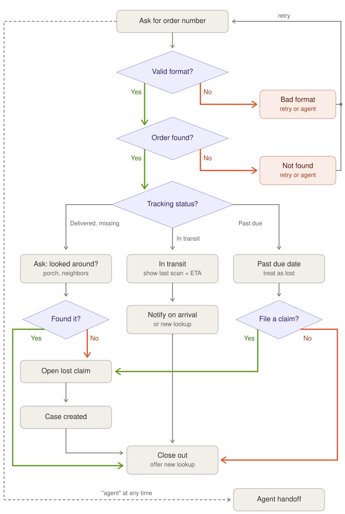

Why an agentic flow, not a keyword-matched script
Two decisions came before any flow was drawn: whether to use AI at all, then what shape it should take. A keyword bot only fires on triggers it expects; "nah it's definitely not out there, asked next door too" means "already checked," but no trigger list catches it. A free-form AI chatbot swings too far the other way — it can be talked into promising refunds or inventing policy. The agentic loop is the middle path: Gemini reads intent like a free-form model would, but every fact and every move it's allowed to make still comes from the app.
Keyword-only
- Rigid triggers, misses anything unscripted
- No read on intent or tone
- Kept here as the offline fallback
Free-form AI chatbot
- Understands phrasing — but can promise anything
- Facts and policy come from the model itself
- One good jailbreak away from a bad answer
Agentic loop (this app)
- Understands phrasing, same as free-form
- One call picks one move from a legal list
- Facts always come from the app, not the model
Intent layerFunction-calling,
mode:"ANY" — one
move, chosen only from what's legal at the customer's current step.GuardrailsThe server re-validates the move regardless of what the
model returned. An illegal pick is rejected, not trusted.
Fact isolationGemini never holds facts — only rewords a draft the
engine built from real data, checked afterward for drift.
Input fencingCustomer text is fenced as data in the prompt, not
instructions — "ignore your rules…" is just a string to read.
The agentic AI loopidentify → retrieve → reword → outcome

Conversation flowthe tree every legal move traces back to
